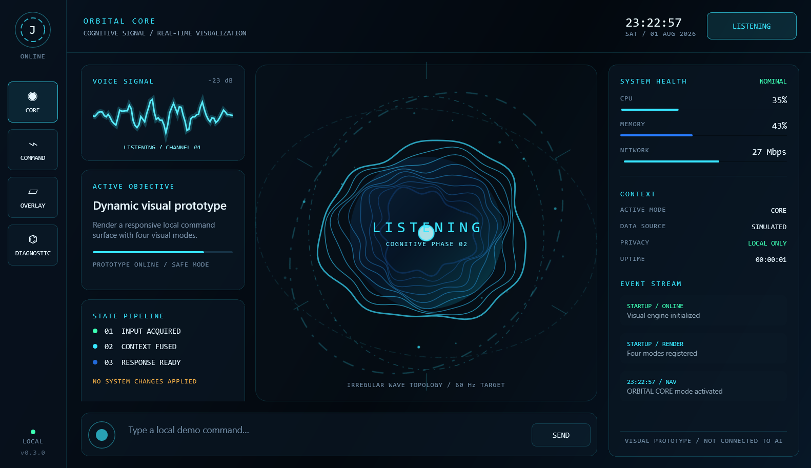

真实 EXE 运行截图
本页展示 Windows 程序的实际运行画面。点击切换五种视图；运行桌面动画与窗口交互请下载完整 Windows 包。

现在可以做什么
- 四种主模式切换与六态动画循环。
- 波浪球体、多层轨道、扫描与加大声纹。
- 输入命令并获得本地模拟反馈。
- 启动真实独立置顶悬浮窗。
- 动态诊断拓扑、事件与遥测演示。
当前能力边界
当前交付为动态视觉原型。命令结果和遥测是模拟数据，尚未连接大语言模型、天气服务或语音识别，也不会执行 Windows 系统操作。
天气、时间、日期、计算和基础对话已列入下一版本方案；文档版 v0.3.1，可执行版仍为 v0.3.0。
运行方法
- 下载并完整解压 ZIP。
- 双击
Jarvis.VisualPrototype.exe。 - 切换左侧模式、点击状态按钮、输入模拟命令，或启动 Ghost Overlay。
保留整个解压目录；无需额外安装 .NET。程序未签名，Windows 可能提示未知发布者。
验证与交付
- x64 Release：0 warnings、0 errors。
- 已验证 Windows 10 build 19045、125% DPI。
- 四页导航、状态循环、输入、悬浮窗检查通过。
- 五张截图、源码、构建脚本与校验值随案例公开。
下载校验与项目资料
ZIP SHA-256
3F56269CA27E39DF6428D2ADB32C970385F03BD0BE72F287F2FACEE87D7243A9